2026 Higher Chemistry - Paper 2 questions
Source: Scottish Qualifications Authority (SQA) / Qualifications Scotland. This is a StemInteract HTML companion, not an official HTML edition. Selectable text is supplied alongside original page images. Use the images or original PDF for equations, powers, fractions, vector notation, tables and diagrams; text extraction cannot fully preserve mathematical layout.
Jump to a question
PDF page 1
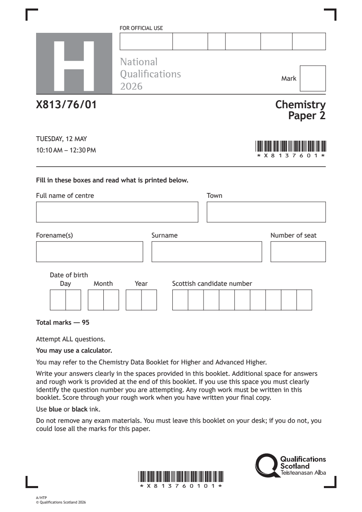
Selectable page text
FOR OFFICIAL USE
H
National
Qualications
Mark
2026
X813/76/01 Chemistry
Paper 2
TUESDAY, 12 MAY
10:10 AM – 12:30 PM
*X8137601*
Fill in these boxes and read what is printed below.
Full name of centre Town
Forename(s) Surname Number of seat
Date of birth
Day Month Year Scottish candidate number
Total marks — 95
Attempt ALL questions.
You may use a calculator.
You may refer to the Chemistry Data Booklet for Higher and Advanced Higher.
Write your answers clearly in the spaces provided in this booklet. Additional space for answers
and rough work is provided at the end of this booklet. If you use this space you must clearly
identify the question number you are attempting. Any rough work must be written in this
booklet. Score through your rough work when you have written your final copy.
Use blue or black ink.
Do not remove any exam materials. You must leave this booklet on your desk; if you do not, you
could lose all the marks for this paper.
*X813760101*
A/HTP
© Qualifications Scotland 2026PDF page 2
Paper 2, Question 1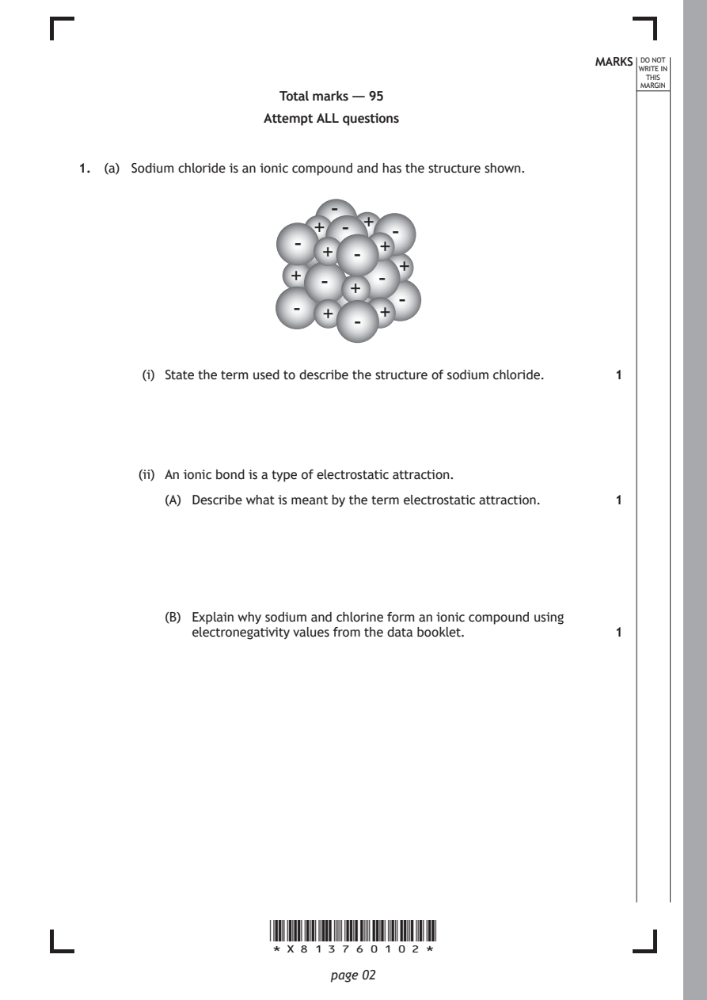
Selectable page text
MARKS _{W}^{D}_{R}^{O}_{I} _{T}^{N}OT
E IN
THIS
MARGIN
Total marks — 95
Attempt ALL questions
1. (a) Sodium chloride is an ionic compound and has the structure shown.
-
+
+ -
-
- +
+ -
+
+ - -
+
-
-
+ +
-
(i) State the term used to describe the structure of sodium chloride. 1
(ii) An ionic bond is a type of electrostatic attraction.
(A) Describe what is meant by the term electrostatic attraction. 1
(B) Explain why sodium and chlorine form an ionic compound using
electronegativity values from the data booklet. 1
*X813760102*
page 02PDF page 3
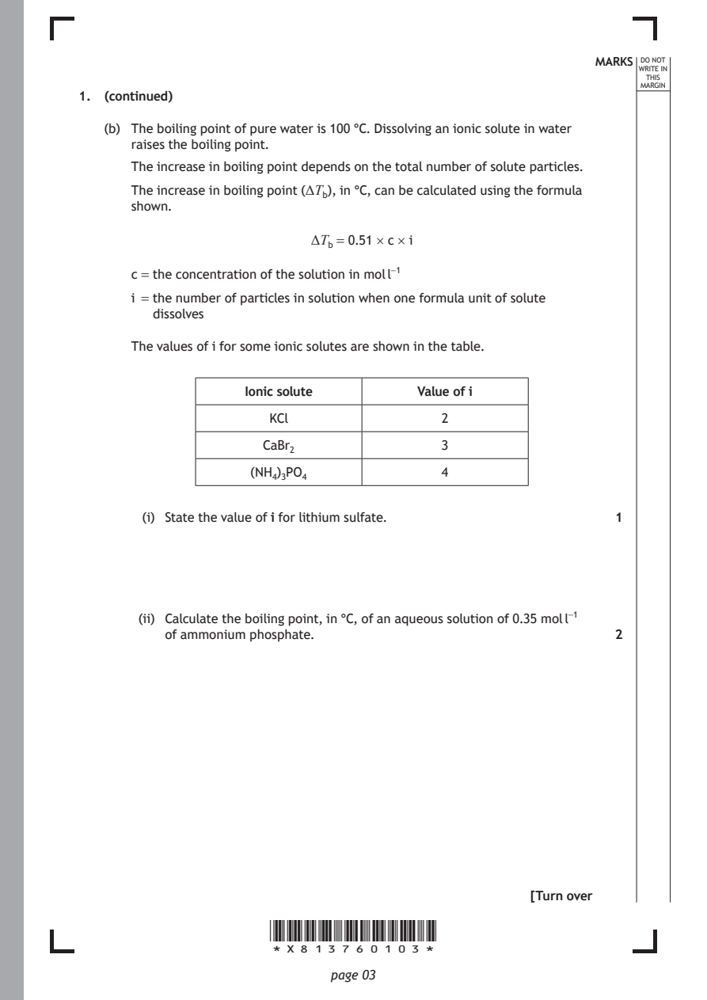
Selectable page text
MARKS _{W}^{D}_{R}^{O}_{I} _{T}^{N}OT
E IN
THIS
MARGIN
1. (continued)
(b) The boiling point of pure water is 100 °C. Dissolving an ionic solute in water
raises the boiling point.
The increase in boiling point depends on the total number of solute particles.
The increase in boiling point (ΔT_{b}), in °C, can be calculated using the formula
shown.
ΔT_{b} = 0.51 × c × i
c = the concentration of the solution in mol l⁻¹
i = the number of particles in solution when one formula unit of solute
dissolves
The values of i for some ionic solutes are shown in the table.
Ionic solute Value of i
KCl 2
CaBr₂ 3
(NH₄)₃PO₄ 4
(i) State the value of i for lithium sulfate. 1
(ii) Calculate the boiling point, in °C, of an aqueous solution of 0.35 mol l⁻¹
of ammonium phosphate. 2
[Turn over
*X813760103*
page 03PDF page 4
Paper 2, Question 2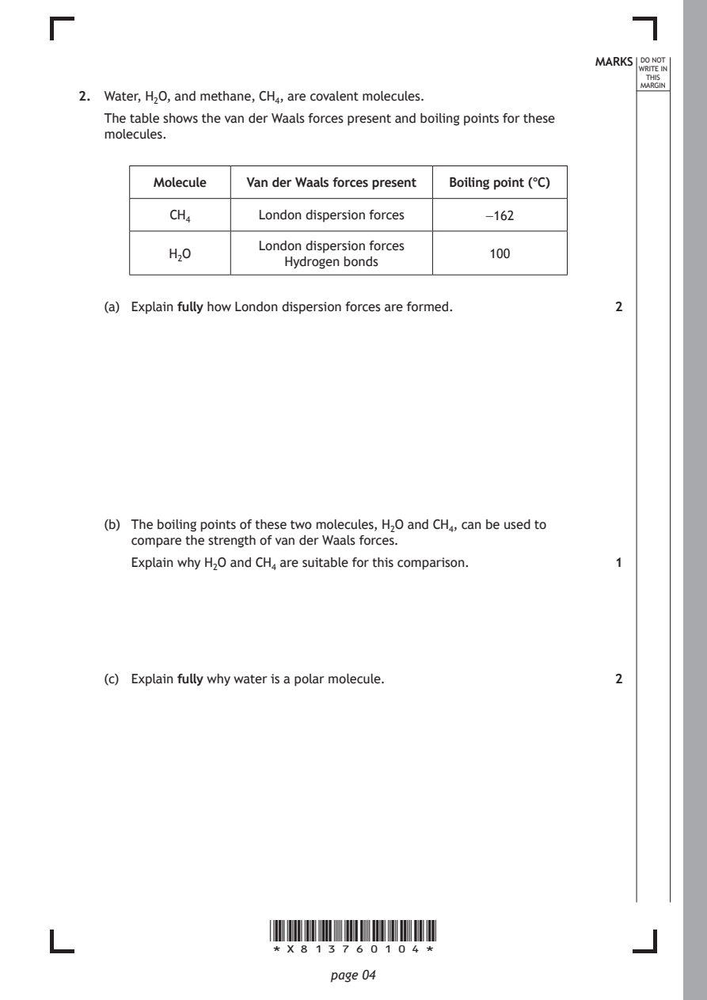
Selectable page text
MARKS _{W}^{D}_{R}^{O}_{I} _{T}^{N}OT
E IN
THIS
MARGIN
2. Water, H₂O, and methane, CH₄, are covalent molecules.
The table shows the van der Waals forces present and boiling points for these
molecules.
Molecule Van der Waals forces present Boiling point (°C)
CH₄ London dispersion forces −162
London dispersion forces
H₂O 100
Hydrogen bonds
(a) Explain fully how London dispersion forces are formed. 2
(b) The boiling points of these two molecules, H₂O and CH₄, can be used to
compare the strength of van der Waals forces.
Explain why H₂O and CH₄ are suitable for this comparison. 1
(c) Explain fully why water is a polar molecule. 2
*X813760104*
page 04PDF page 5
Paper 2, Question 3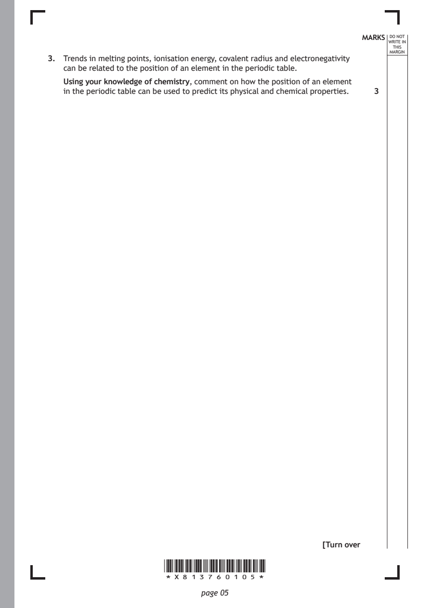
Selectable page text
MARKS _{W}^{D}_{R}^{O}_{I} _{T}^{N}OT
E IN
THIS
MARGIN
3. Trends in melting points, ionisation energy, covalent radius and electronegativity
can be related to the position of an element in the periodic table.
Using your knowledge of chemistry, comment on how the position of an element
in the periodic table can be used to predict its physical and chemical properties. 3
[Turn over
*X813760105*
page 05PDF page 6
Paper 2, Question 4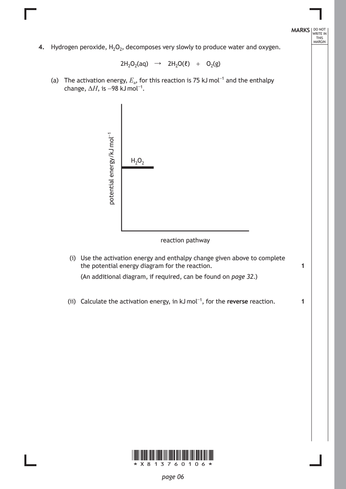
Selectable page text
MARKS _{W}^{D}_{R}^{O}_{I} _{T}^{N}OT
E IN
THIS
MARGIN
4. Hydrogen peroxide, H₂O₂, decomposes very slowly to produce water and oxygen.
2H₂O₂(aq) ↓ 2H₂O(ℓ) + O₂(g)
(a) The activation energy, Eₐ, for this reaction is 75 kJ mol⁻¹ and the enthalpy
change, ΔH, is −98 kJ mol⁻¹.
reaction pathway
*X813760106*
page 06
1−lom
Jk/ygrene
laitnetop
H₂O₂
(i) Use the activation energy and enthalpy change given above to complete
the potential energy diagram for the reaction. 1
(An additional diagram, if required, can be found on page 32.)
(ii) Calculate the activation energy, in kJ mol⁻¹, for the reverse reaction. 1PDF page 7
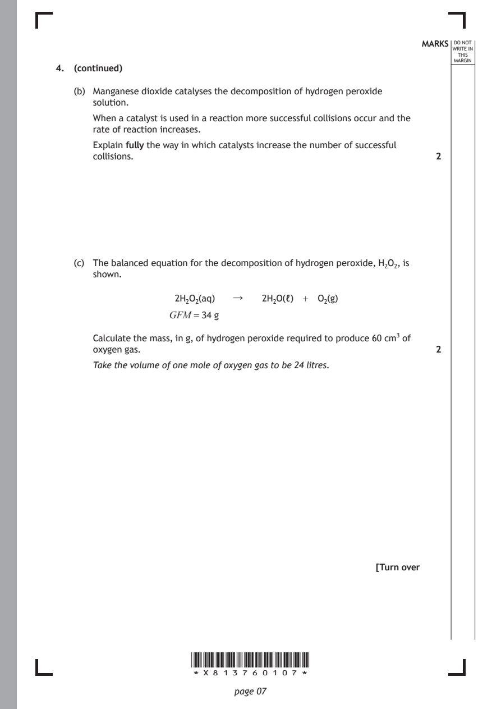
Selectable page text
MARKS _{W}^{D}_{R}^{O}_{I} _{T}^{N}OT
E IN
THIS
MARGIN
4. (continued)
(b) Manganese dioxide catalyses the decomposition of hydrogen peroxide
solution.
When a catalyst is used in a reaction more successful collisions occur and the
rate of reaction increases.
Explain fully the way in which catalysts increase the number of successful
collisions. 2
(c) The balanced equation for the decomposition of hydrogen peroxide, H₂O₂, is
shown.
2H₂O₂(aq) ↓ 2H₂O(ℓ) + O₂(g)
GFM = 34 g
Calculate the mass, in g, of hydrogen peroxide required to produce 60 cm³ of
oxygen gas. 2
Take the volume of one mole of oxygen gas to be 24 litres.
[Turn over
*X813760107*
page 07PDF page 8
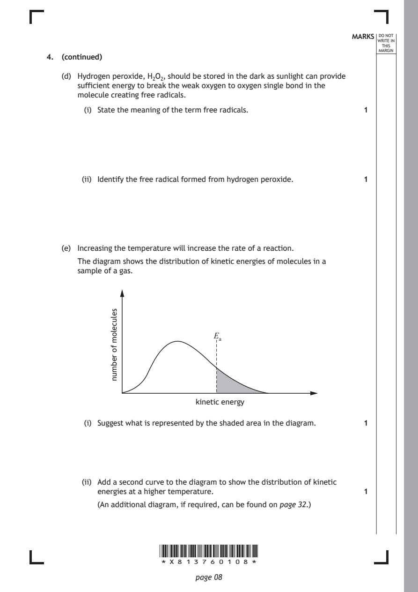
Selectable page text
MARKS _{W}^{D}_{R}^{O}_{I} _{T}^{N}OT
E IN
THIS
MARGIN
4. (continued)
(d) Hydrogen peroxide, H₂O₂, should be stored in the dark as sunlight can provide
sufficient energy to break the weak oxygen to oxygen single bond in the
molecule creating free radicals.
(i) State the meaning of the term free radicals.
(ii) Identify the free radical formed from hydrogen peroxide.
(e) Increasing the temperature will increase the rate of a reaction.
The diagram shows the distribution of kinetic energies of molecules in a
sample of a gas.
Eₐ
kinetic energy
*X813760108*
page 08
selucelom
fo
rebmun
1
1
(i) Suggest what is represented by the shaded area in the diagram. 1
(ii) Add a second curve to the diagram to show the distribution of kinetic
energies at a higher temperature. 1
(An additional diagram, if required, can be found on page 32.)PDF page 9
Paper 2, Question 5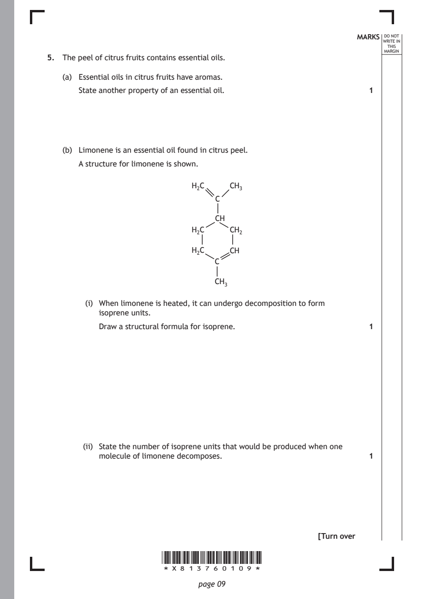
Selectable page text
MARKS _{W}^{D}_{R}^{O}_{I} _{T}^{N}OT
E IN
THIS
MARGIN
5. The peel of citrus fruits contains essential oils.
(a) Essential oils in citrus fruits have aromas.
State another property of an essential oil. 1
(b) Limonene is an essential oil found in citrus peel.
A structure for limonene is shown.
H₂C CH₃
C
CH
H₂C CH₂
H₂C CH
C
CH₃
(i) When limonene is heated, it can undergo decomposition to form
isoprene units.
Draw a structural formula for isoprene. 1
(ii) State the number of isoprene units that would be produced when one
molecule of limonene decomposes. 1
[Turn over
*X813760109*
page 09PDF page 10
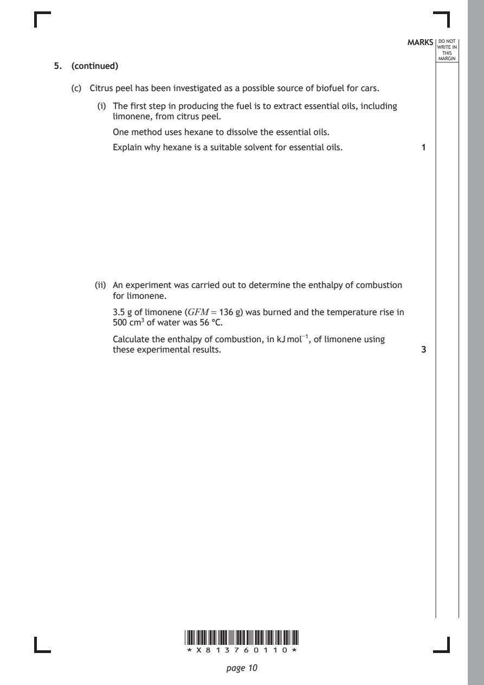
Selectable page text
MARKS _{W}^{D}_{R}^{O}_{I} _{T}^{N}OT
E IN
THIS
MARGIN
5. (continued)
(c) Citrus peel has been investigated as a possible source of biofuel for cars.
(i) The first step in producing the fuel is to extract essential oils, including
limonene, from citrus peel.
One method uses hexane to dissolve the essential oils.
Explain why hexane is a suitable solvent for essential oils. 1
(ii) An experiment was carried out to determine the enthalpy of combustion
for limonene.
3.5 g of limonene (GFM = 136 g) was burned and the temperature rise in
500 cm³ of water was 56 °C.
Calculate the enthalpy of combustion, in kJ mol⁻¹, of limonene using
these experimental results. 3
*X813760110*
page 10PDF page 11
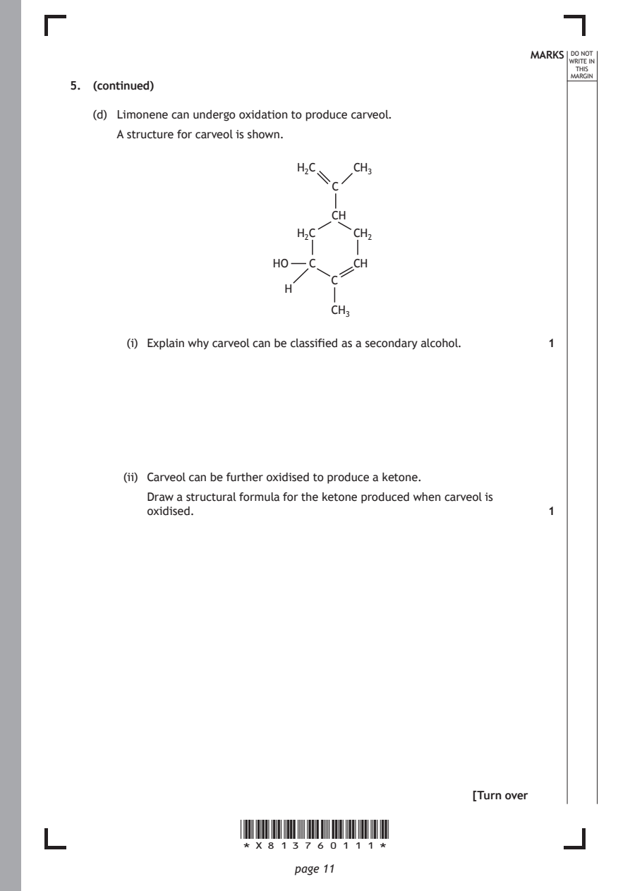
Selectable page text
MARKS _{W}^{D}_{R}^{O}_{I} _{T}^{N}OT
E IN
THIS
MARGIN
5. (continued)
(d) Limonene can undergo oxidation to produce carveol.
A structure for carveol is shown.
H₂C CH₃
C
CH
H₂C CH₂
HO C CH
C
H
CH₃
(i) Explain why carveol can be classified as a secondary alcohol. 1
(ii) Carveol can be further oxidised to produce a ketone.
Draw a structural formula for the ketone produced when carveol is
oxidised. 1
[Turn over
*X813760111*
page 11PDF page 12
Paper 2, Question 6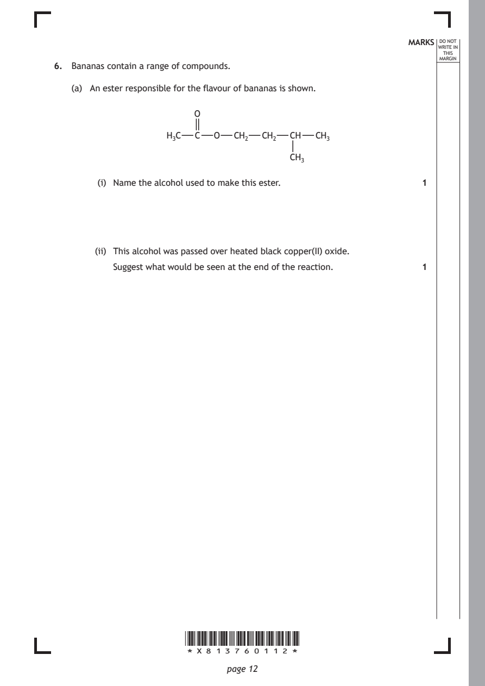
Selectable page text
MARKS _{W}^{D}_{R}^{O}_{I} _{T}^{N}OT
E IN
THIS
MARGIN
6. Bananas contain a range of compounds.
(a) An ester responsible for the flavour of bananas is shown.
O
H₃C C O CH₂ CH₂ CH CH₃
CH₃
(i) Name the alcohol used to make this ester. 1
(ii) This alcohol was passed over heated black copper(II) oxide.
Suggest what would be seen at the end of the reaction. 1
*X813760112*
page 12PDF page 13
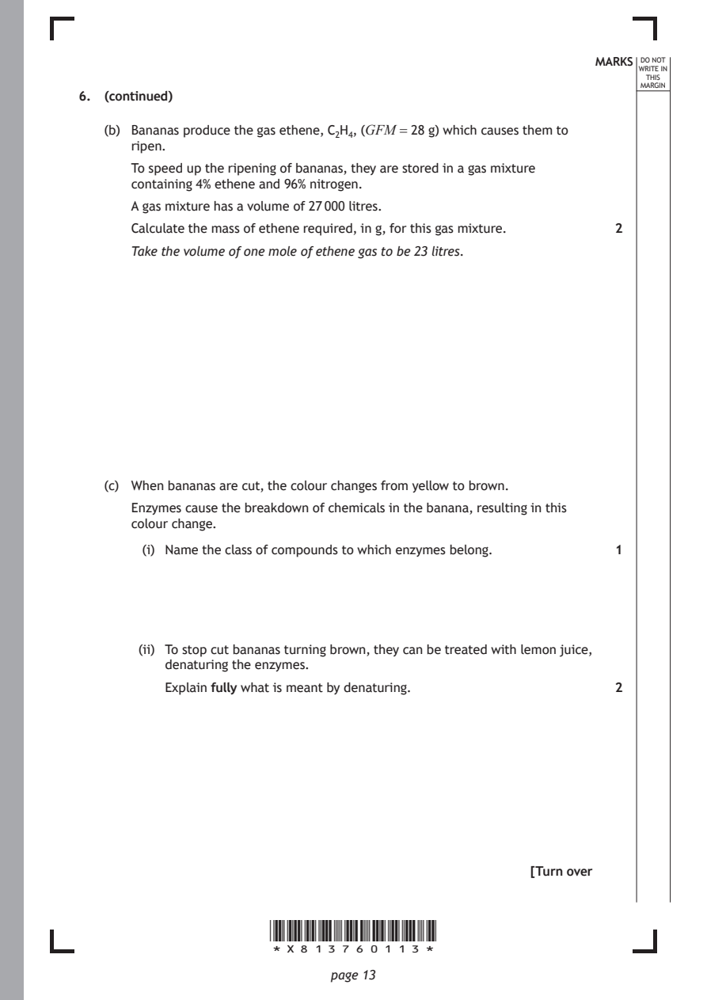
Selectable page text
MARKS _{W}^{D}_{R}^{O}_{I} _{T}^{N}OT
E IN
THIS
MARGIN
6. (continued)
(b) Bananas produce the gas ethene, C₂H₄, (GFM = 28 g) which causes them to
ripen.
To speed up the ripening of bananas, they are stored in a gas mixture
containing 4% ethene and 96% nitrogen.
A gas mixture has a volume of 27 000 litres.
Calculate the mass of ethene required, in g, for this gas mixture. 2
Take the volume of one mole of ethene gas to be 23 litres.
(c) When bananas are cut, the colour changes from yellow to brown.
Enzymes cause the breakdown of chemicals in the banana, resulting in this
colour change.
(i) Name the class of compounds to which enzymes belong. 1
(ii) To stop cut bananas turning brown, they can be treated with lemon juice,
denaturing the enzymes.
Explain fully what is meant by denaturing. 2
[Turn over
*X813760113*
page 13PDF page 14
Paper 2, Question 7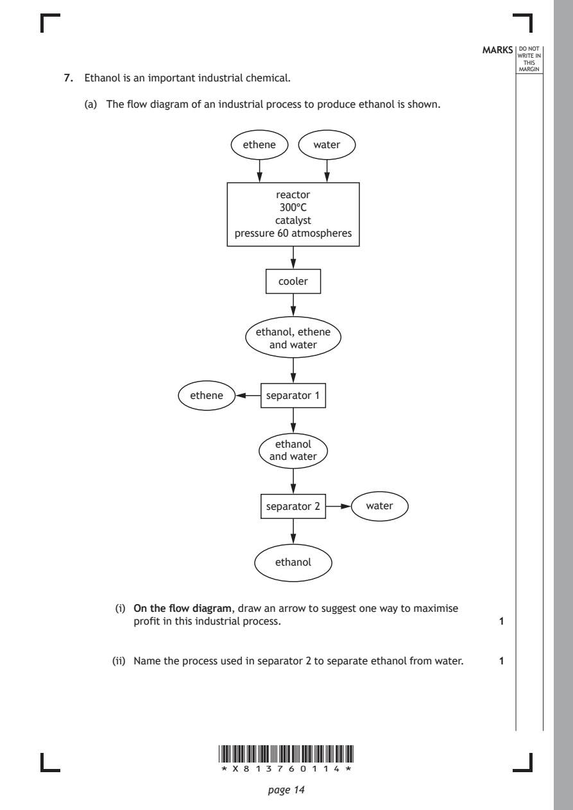
Selectable page text
MARKS _{W}^{D}_{R}^{O}_{I} _{T}^{N}OT
E IN
THIS
MARGIN
7. Ethanol is an important industrial chemical.
(a) The flow diagram of an industrial process to produce ethanol is shown.
ethene water
reactor
300°C
catalyst
pressure 60 atmospheres
cooler
ethanol, ethene
and water
ethene separator 1
ethanol
and water
separator 2 water
ethanol
(i) On the flow diagram, draw an arrow to suggest one way to maximise
profit in this industrial process. 1
(ii) Name the process used in separator 2 to separate ethanol from water. 1
*X813760114*
page 14PDF page 15
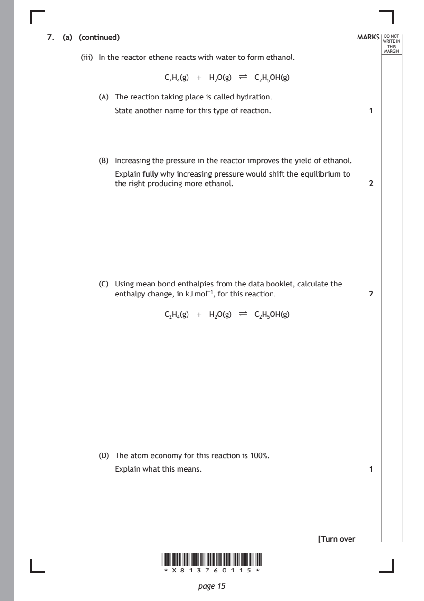
Selectable page text
7. (a) (continued) MARKS _{W}^{D}_{R}^{O}_{I} _{T}^{N}OT
E IN
THIS
MARGIN
(iii) In the reactor ethene reacts with water to form ethanol.
C₂H₄(g) + H₂O(g) ∏ C₂H₅OH(g)
(A) The reaction taking place is called hydration.
State another name for this type of reaction. 1
(B) Increasing the pressure in the reactor improves the yield of ethanol.
Explain fully why increasing pressure would shift the equilibrium to
the right producing more ethanol. 2
(C) Using mean bond enthalpies from the data booklet, calculate the
enthalpy change, in kJ mol⁻¹, for this reaction. 2
C₂H₄(g) + H₂O(g) ∏ C₂H₅OH(g)
(D) The atom economy for this reaction is 100%.
Explain what this means. 1
[Turn over
*X813760115*
page 15PDF page 16
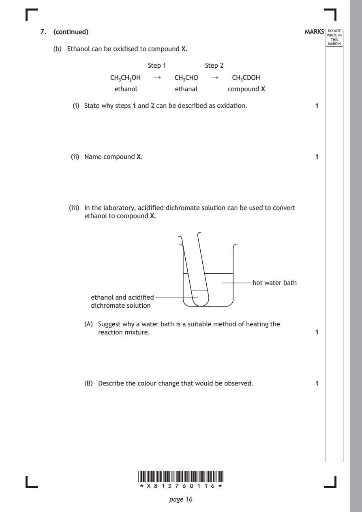
Selectable page text
7. (continued) MARKS _{W}^{D}_{R}^{O}_{I} _{T}^{N}OT
E IN
THIS
MARGIN
(b) Ethanol can be oxidised to compound X.
Step 1 Step 2
CH₃CH₂OH ↓ CH₃CHO ↓ CH₃COOH
ethanol ethanal compound X
(i) State why steps 1 and 2 can be described as oxidation. 1
(ii) Name compound X. 1
(iii) In the laboratory, acidified dichromate solution can be used to convert
ethanol to compound X.
hot water bath
ethanol and acidified
dichromate solution
(A) Suggest why a water bath is a suitable method of heating the
reaction mixture. 1
(B) Describe the colour change that would be observed. 1
*X813760116*
page 16PDF page 17
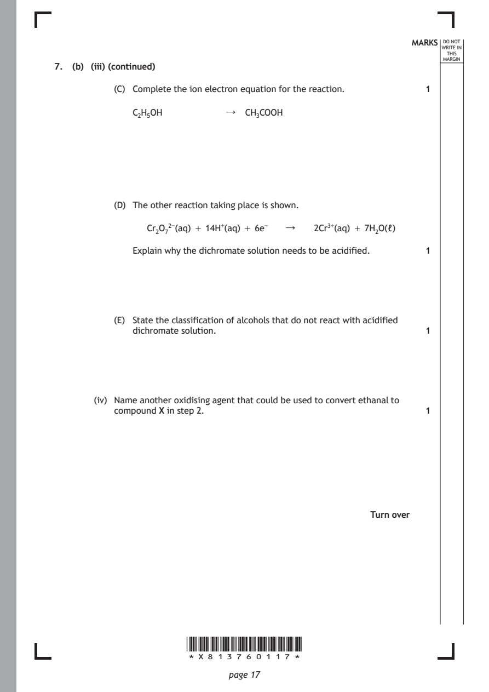
Selectable page text
MARKS _{W}^{D}_{R}^{O}_{I} _{T}^{N}OT
E IN
THIS
MARGIN
7. (b) (iii) (continued)
(C) Complete the ion electron equation for the reaction. 1
C₂H₅OH ↓ CH₃COOH
(D) The other reaction taking place is shown.
Cr₂O₇²⁻(aq) + 14H⁺(aq) + 6e⁻ ↓ 2Cr³⁺(aq) + 7H₂O(ℓ)
Explain why the dichromate solution needs to be acidified. 1
(E) State the classification of alcohols that do not react with acidified
dichromate solution. 1
(iv) Name another oxidising agent that could be used to convert ethanal to
compound X in step 2. 1
Turn over
*X813760117*
page 17PDF page 18
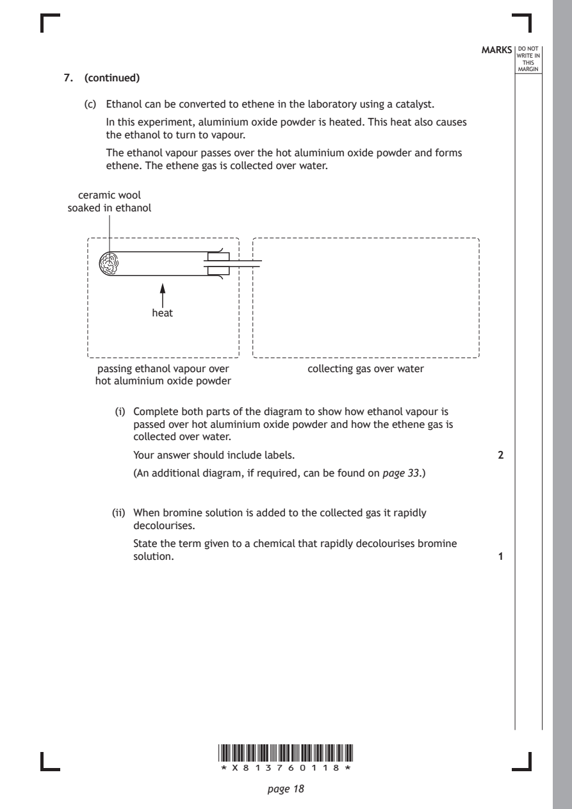
Selectable page text
MARKS _{W}^{D}_{R}^{O}_{I} _{T}^{N}OT
E IN
THIS
MARGIN
7. (continued)
(c) Ethanol can be converted to ethene in the laboratory using a catalyst.
In this experiment, aluminium oxide powder is heated. This heat also causes
the ethanol to turn to vapour.
The ethanol vapour passes over the hot aluminium oxide powder and forms
ethene. The ethene gas is collected over water.
ceramic wool
soaked in ethanol
heat
passing ethanol vapour over collecting gas over water
hot aluminium oxide powder
(i) Complete both parts of the diagram to show how ethanol vapour is
passed over hot aluminium oxide powder and how the ethene gas is
collected over water.
Your answer should include labels. 2
(An additional diagram, if required, can be found on page 33.)
(ii) When bromine solution is added to the collected gas it rapidly
decolourises.
State the term given to a chemical that rapidly decolourises bromine
solution. 1
*X813760118*
page 18PDF page 19
Paper 2, Question 8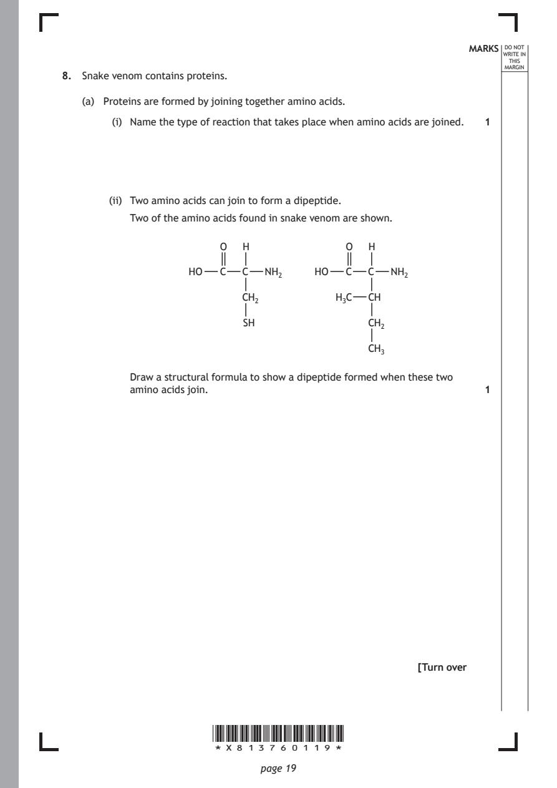
Selectable page text
MARKS _{W}^{D}_{R}^{O}_{I} _{T}^{N}OT
E IN
THIS
MARGIN
8. Snake venom contains proteins.
(a) Proteins are formed by joining together amino acids.
(i) Name the type of reaction that takes place when amino acids are joined. 1
(ii) Two amino acids can join to form a dipeptide.
Two of the amino acids found in snake venom are shown.
O H O H
HO C C NH₂ HO C C NH₂
CH₂ H₃C CH
SH CH₂
CH₃
Draw a structural formula to show a dipeptide formed when these two
amino acids join. 1
[Turn over
*X813760119*
page 19PDF page 20
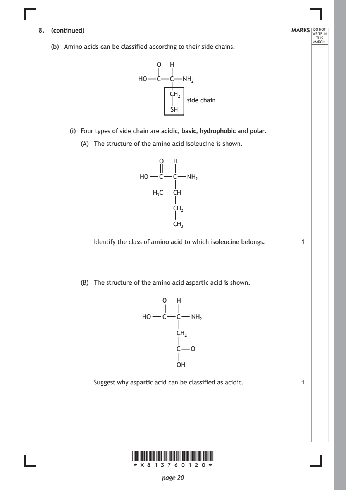
Selectable page text
8. (continued) MARKS _{W}^{D}_{R}^{O}_{I} _{T}^{N}OT
E IN
THIS
MARGIN
(b) Amino acids can be classified according to their side chains.
O H
HO C C NH₂
CH₂
side chain
SH
(i) Four types of side chain are acidic, basic, hydrophobic and polar.
(A) The structure of the amino acid isoleucine is shown.
O H
HO C C NH₂
H₃C CH
CH₂
CH₃
Identify the class of amino acid to which isoleucine belongs. 1
(B) The structure of the amino acid aspartic acid is shown.
O H
HO C C NH₂
CH₂
C O
OH
Suggest why aspartic acid can be classified as acidic. 1
*X813760120*
page 20PDF page 21
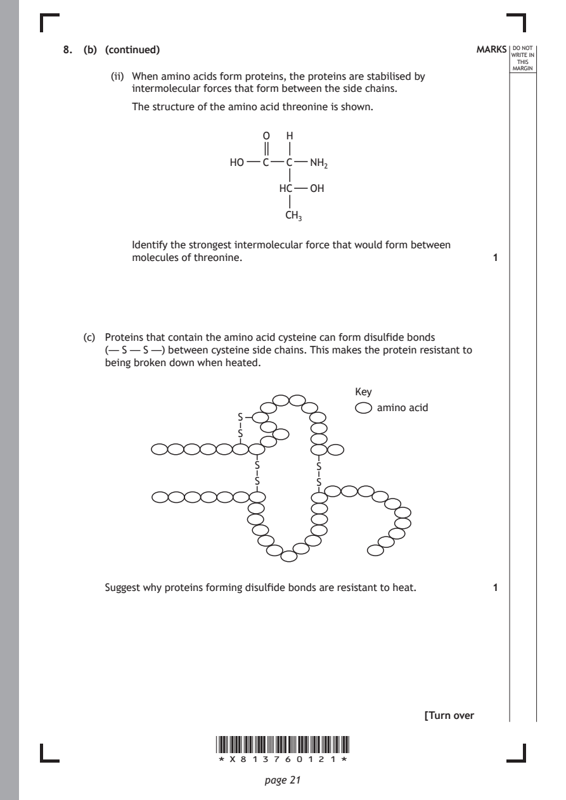
Selectable page text
8. (b) (continued) MARKS _{W}^{D}_{R}^{O}_{I} _{T}^{N}OT
E IN
THIS
MARGIN
(ii) When amino acids form proteins, the proteins are stabilised by
intermolecular forces that form between the side chains.
The structure of the amino acid threonine is shown.
O H
HO C C NH₂
HC OH
CH₃
Identify the strongest intermolecular force that would form between
molecules of threonine. 1
(c) Proteins that contain the amino acid cysteine can form disulfide bonds
(― S ― S ―) between cysteine side chains. This makes the protein resistant to
being broken down when heated.
Key
amino acid
S
S
S S
S S
Suggest why proteins forming disulfide bonds are resistant to heat. 1
[Turn over
*X813760121*
page 21PDF page 22
Paper 2, Question 9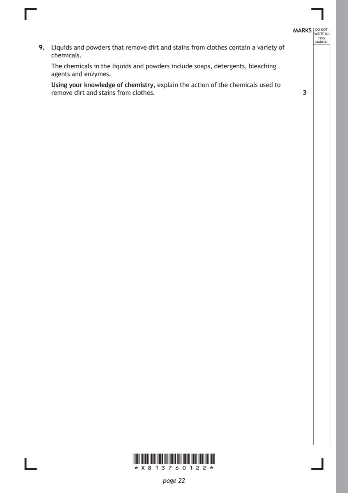
Selectable page text
MARKS _{W}^{D}_{R}^{O}_{I} _{T}^{N}OT
E IN
THIS
MARGIN
9. Liquids and powders that remove dirt and stains from clothes contain a variety of
chemicals.
The chemicals in the liquids and powders include soaps, detergents, bleaching
agents and enzymes.
Using your knowledge of chemistry, explain the action of the chemicals used to
remove dirt and stains from clothes. 3
*X813760122*
page 22PDF page 23
Paper 2, Question 10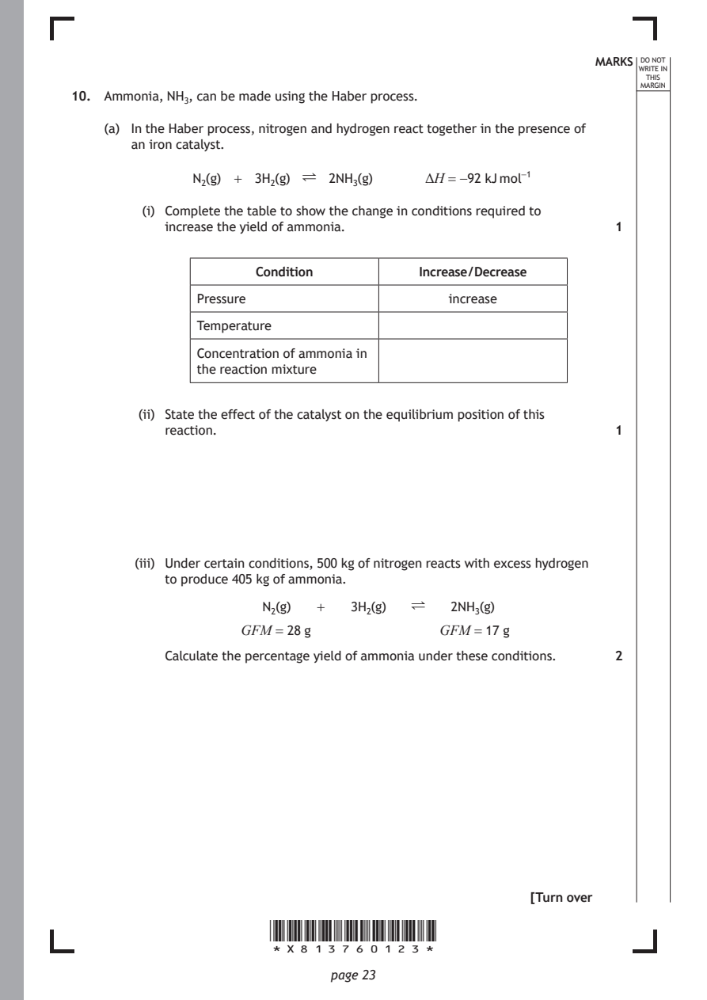
Selectable page text
MARKS _{W}^{D}_{R}^{O}_{I} _{T}^{N}OT
E IN
THIS
MARGIN
10. Ammonia, NH₃, can be made using the Haber process.
(a) In the Haber process, nitrogen and hydrogen react together in the presence of
an iron catalyst.
N₂(g) + 3H₂(g) ∏ 2NH₃(g) ΔH = −92 kJ mol⁻¹
(i) Complete the table to show the change in conditions required to
increase the yield of ammonia. 1
Condition Increase/Decrease
Pressure increase
Temperature
Concentration of ammonia in
the reaction mixture
(ii) State the effect of the catalyst on the equilibrium position of this
reaction. 1
(iii) Under certain conditions, 500 kg of nitrogen reacts with excess hydrogen
to produce 405 kg of ammonia.
N₂(g) + 3H₂(g) ∏ 2NH₃(g)
GFM = 28 g GFM = 17 g
Calculate the percentage yield of ammonia under these conditions. 2
[Turn over
*X813760123*
page 23PDF page 24
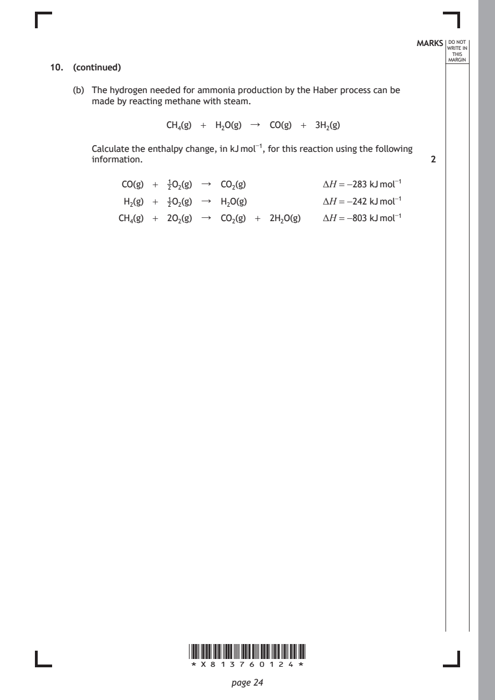
Selectable page text
MARKS _{W}^{D}_{R}^{O}_{I} _{T}^{N}OT
E IN
THIS
MARGIN
10. (continued)
(b) The hydrogen needed for ammonia production by the Haber process can be
made by reacting methane with steam.
CH₄(g) + H₂O(g) ↓ CO(g) + 3H₂(g)
Calculate the enthalpy change, in kJ mol⁻¹, for this reaction using the following
information. 2
CO(g) + 1O₂(g) ↓ CO₂(g) ΔH = −283 kJ mol⁻¹
2
H₂(g) + 1O₂(g) ↓ H₂O(g) ΔH = −242 kJ mol⁻¹
2
CH₄(g) + 2O₂(g) ↓ CO₂(g) + 2H₂O(g) ΔH = −803 kJ mol⁻¹
*X813760124*
page 24PDF page 25
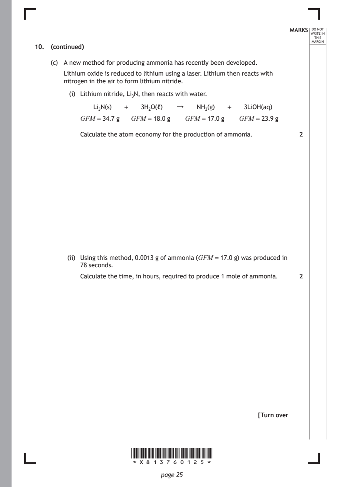
Selectable page text
MARKS _{W}^{D}_{R}^{O}_{I} _{T}^{N}OT
E IN
THIS
MARGIN
10. (continued)
(c) A new method for producing ammonia has recently been developed.
Lithium oxide is reduced to lithium using a laser. Lithium then reacts with
nitrogen in the air to form lithium nitride.
(i) Lithium nitride, Li₃N, then reacts with water.
Li₃N(s) + 3H₂O(ℓ) ↓ NH₃(g) + 3LiOH(aq)
GFM = 34.7 g GFM = 18.0 g GFM = 17.0 g GFM = 23.9 g
Calculate the atom economy for the production of ammonia. 2
(ii) Using this method, 0.0013 g of ammonia (GFM = 17.0 g) was produced in
78 seconds.
Calculate the time, in hours, required to produce 1 mole of ammonia. 2
[Turn over
*X813760125*
page 25PDF page 26
Paper 2, Question 11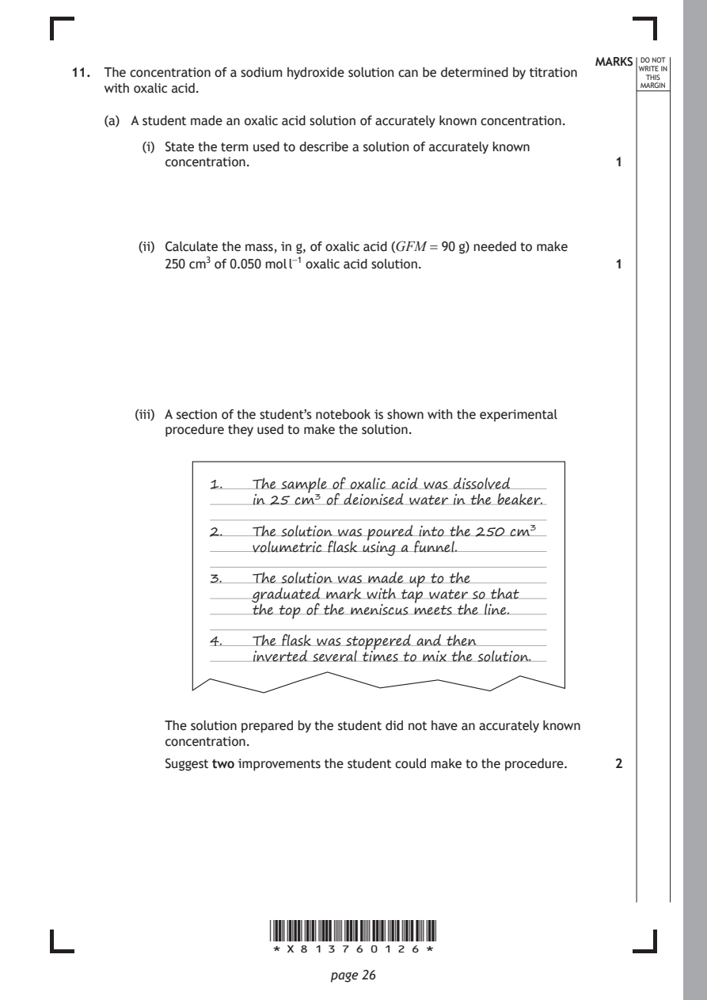
Selectable page text
MARKS _{W}^{D}_{R}^{O}_{I} _{T}^{N}OT
11. The concentration of a sodium hydroxide solution can be determined by titration E IN
THIS
with oxalic acid. MARGIN
(a) A student made an oxalic acid solution of accurately known concentration.
(i) State the term used to describe a solution of accurately known
concentration. 1
(ii) Calculate the mass, in g, of oxalic acid (GFM = 90 g) needed to make
250 cm³ of 0.050 mol l⁻¹ oxalic acid solution. 1
(iii) A section of the student’s notebook is shown with the experimental
procedure they used to make the solution.
1. The sample of oxalic acid was dissolved
in 25 cm³ of deionised water in the beaker.
2. The solution was poured into the 250 cm³
volumetric flask using a funnel.
3. The solution was made up to the
graduated mark with tap water so that
the top of the meniscus meets the line.
4. The flask was stoppered and then
inverted several times to mix the solution.
The solution prepared by the student did not have an accurately known
concentration.
Suggest two improvements the student could make to the procedure. 2
*X813760126*
page 26PDF page 27
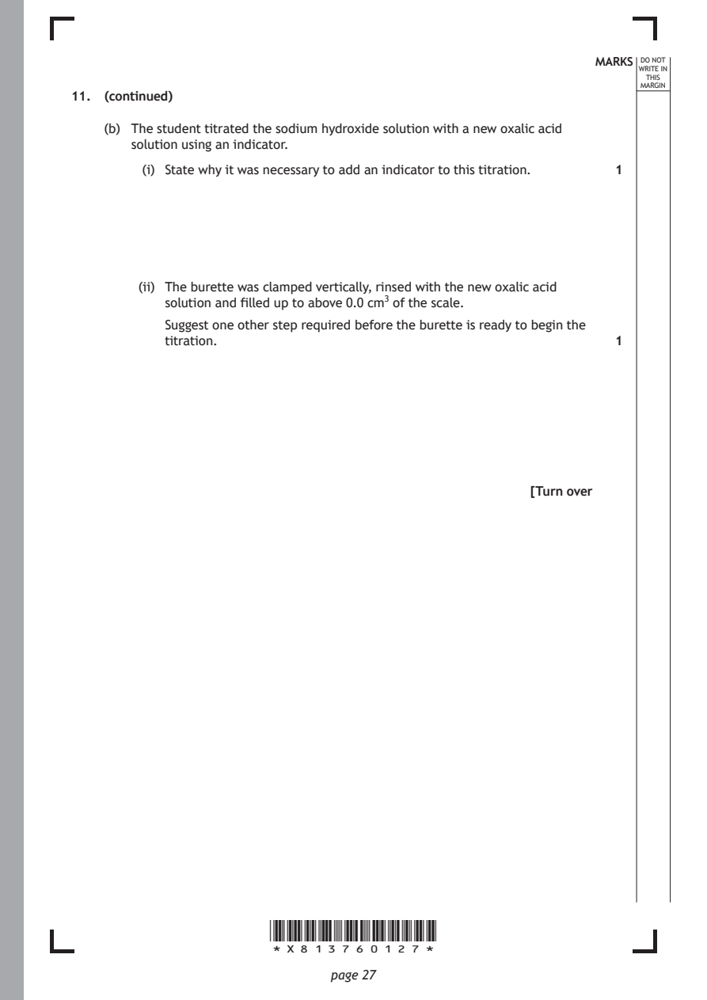
Selectable page text
MARKS _{W}^{D}_{R}^{O}_{I} _{T}^{N}OT
E IN
THIS
MARGIN
11. (continued)
(b) The student titrated the sodium hydroxide solution with a new oxalic acid
solution using an indicator.
(i) State why it was necessary to add an indicator to this titration. 1
(ii) The burette was clamped vertically, rinsed with the new oxalic acid
solution and filled up to above 0.0 cm³ of the scale.
Suggest one other step required before the burette is ready to begin the
titration. 1
[Turn over
*X813760127*
page 27PDF page 28
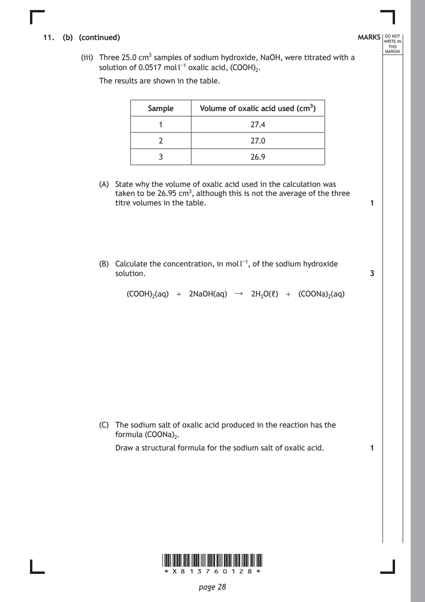
Selectable page text
11. (b) (continued) MARKS _{W}^{D}_{R}^{O}_{I} _{T}^{N}OT
E IN
THIS
MARGIN
(iii) Three 25.0 cm³ samples of sodium hydroxide, NaOH, were titrated with a
solution of 0.0517 mol l⁻¹ oxalic acid, (COOH)₂.
The results are shown in the table.
Sample Volume of oxalic acid used (cm³)
1 27.4
2 27.0
3 26.9
(A) State why the volume of oxalic acid used in the calculation was
taken to be 26.95 cm³, although this is not the average of the three
titre volumes in the table. 1
(B) Calculate the concentration, in mol l⁻¹, of the sodium hydroxide
solution. 3
(COOH)₂(aq) + 2NaOH(aq) ↓ 2H₂O(ℓ) + (COONa)₂(aq)
(C) The sodium salt of oxalic acid produced in the reaction has the
formula (COONa)₂.
Draw a structural formula for the sodium salt of oxalic acid. 1
*X813760128*
page 28PDF page 29
Paper 2, Question 12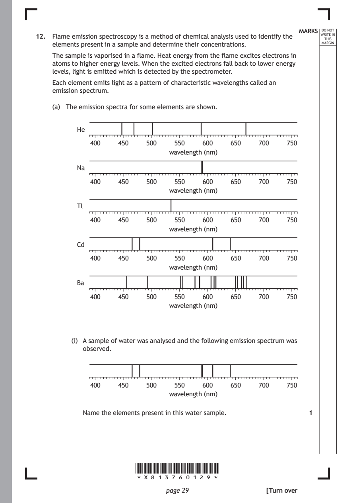
Selectable page text
MARKS _{W}^{D}_{R}^{O}_{I} _{T}^{N}OT
12. Flame emission spectroscopy is a method of chemical analysis used to identify the E IN
THIS
elements present in a sample and determine their concentrations. MARGIN
The sample is vaporised in a flame. Heat energy from the flame excites electrons in
atoms to higher energy levels. When the excited electrons fall back to lower energy
levels, light is emitted which is detected by the spectrometer.
Each element emits light as a pattern of characteristic wavelengths called an
emission spectrum.
(a) The emission spectra for some elements are shown.
He
400 450 500 550 600 650 700 750
wavelength (nm)
Na
400 450 500 550 600 650 700 750
wavelength (nm)
Tl
400 450 500 550 600 650 700 750
wavelength (nm)
Cd
400 450 500 550 600 650 700 750
wavelength (nm)
Ba
400 450 500 550 600 650 700 750
wavelength (nm)
(i) A sample of water was analysed and the following emission spectrum was
observed.
400 450 500 550 600 650 700 750
wavelength (nm)
Name the elements present in this water sample. 1
*X813760129*
page 29 [Turn overPDF page 30
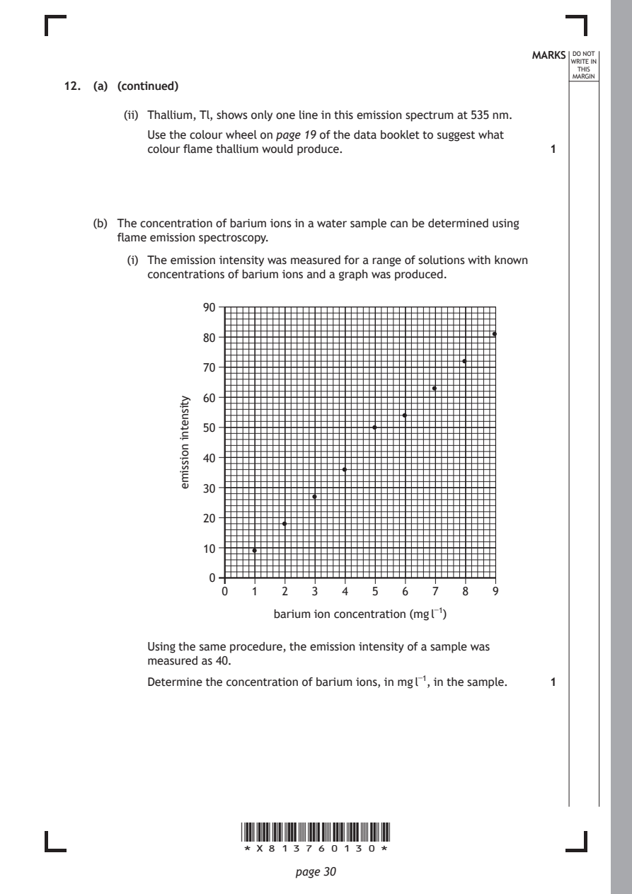
Selectable page text
MARKS _{W}^{D}_{R}^{O}_{I} _{T}^{N}OT
E IN
THIS
MARGIN
12. (a) (continued)
(ii) Thallium, Tl, shows only one line in this emission spectrum at 535 nm.
Use the colour wheel on page 19 of the data booklet to suggest what
colour flame thallium would produce.
(b) The concentration of barium ions in a water sample can be determined using
flame emission spectroscopy.
(i) The emission intensity was measured for a range of solutions with known
concentrations of barium ions and a graph was produced.
90
80
70
60
50
40
30
20
10
*X813760130*
page 30
ytisnetni
noissime
1
0
0 1 2 3 4 5 6 7 8 9
barium ion concentration (mg l⁻¹)
Using the same procedure, the emission intensity of a sample was
measured as 40.
Determine the concentration of barium ions, in mg l⁻¹, in the sample. 1PDF page 31
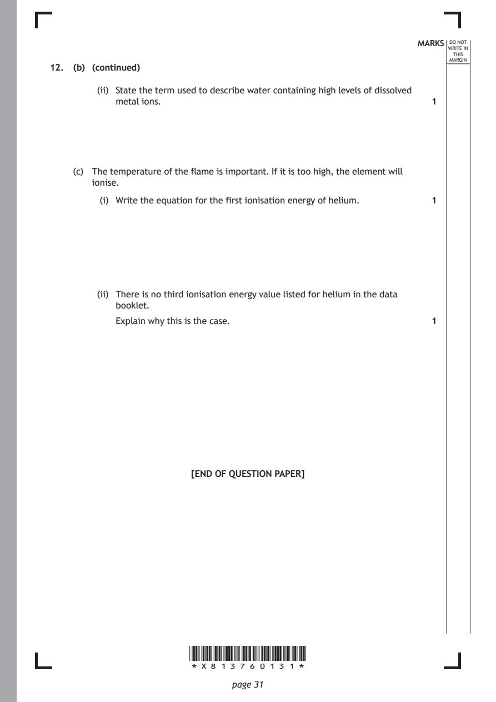
Selectable page text
MARKS _{W}^{D}_{R}^{O}_{I} _{T}^{N}OT
E IN
THIS
MARGIN
12. (b) (continued)
(ii) State the term used to describe water containing high levels of dissolved
metal ions. 1
(c) The temperature of the flame is important. If it is too high, the element will
ionise.
(i) Write the equation for the first ionisation energy of helium. 1
(ii) There is no third ionisation energy value listed for helium in the data
booklet.
Explain why this is the case. 1
[END OF QUESTION PAPER]
*X813760131*
page 31PDF page 32
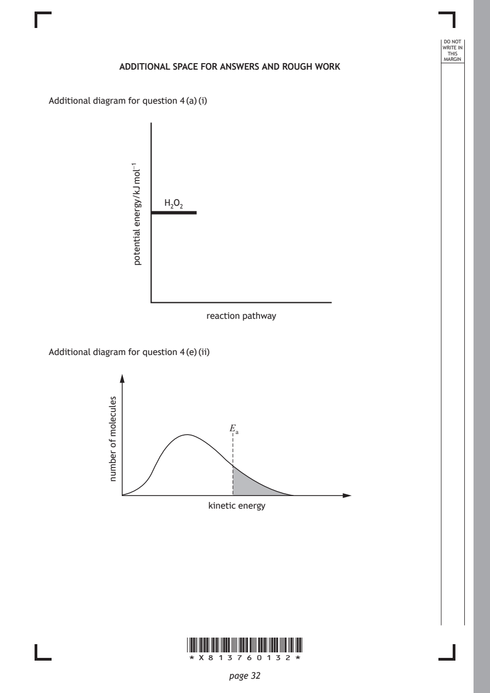
Selectable page text
DO NOT
WRITE IN
THIS
MARGIN
ADDITIONAL SPACE FOR ANSWERS AND ROUGH WORK
Additional diagram for question 4 (a) (i)
reaction pathway
*X813760132*
page 32
1−lom
Jk/ygrene
laitnetop
H₂O₂
Additional diagram for question 4 (e) (ii)
Eₐ
kinetic energy
selucelom
fo
rebmunPDF page 33
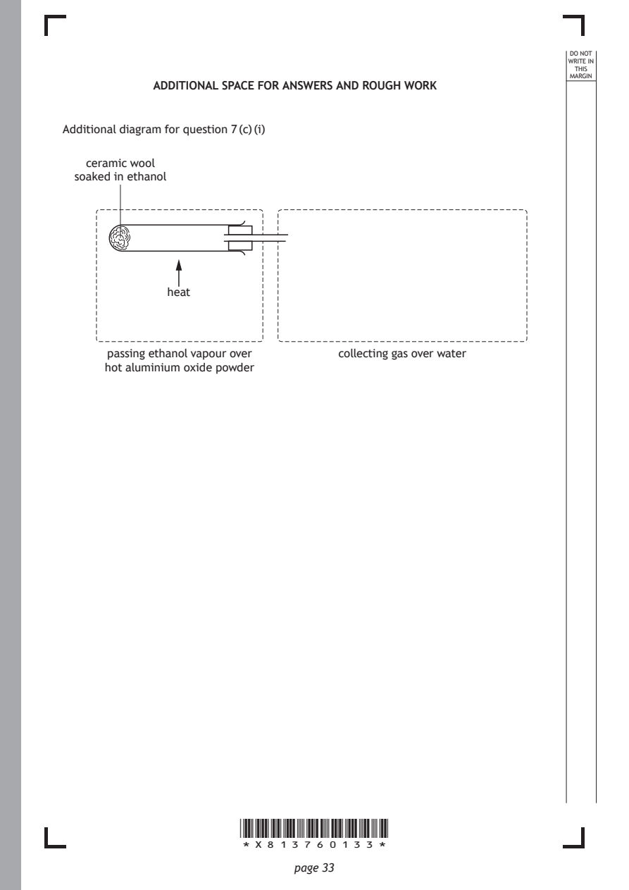
Selectable page text
DO NOT
WRITE IN
THIS
MARGIN
ADDITIONAL SPACE FOR ANSWERS AND ROUGH WORK
Additional diagram for question 7 (c) (i)
ceramic wool
soaked in ethanol
heat
passing ethanol vapour over collecting gas over water
hot aluminium oxide powder
*X813760133*
page 33PDF page 34
Selectable page text
DO NOT
WRITE IN
THIS
MARGIN
ADDITIONAL SPACE FOR ANSWERS AND ROUGH WORK
*X813760134*
page 34PDF page 35
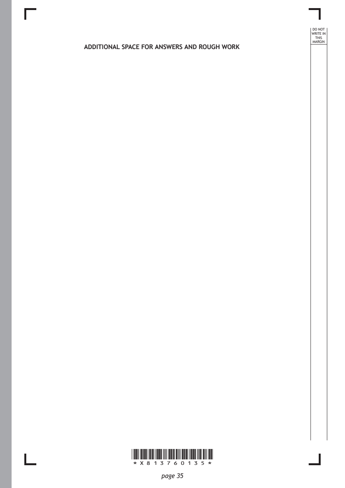
Selectable page text
DO NOT
WRITE IN
THIS
MARGIN
ADDITIONAL SPACE FOR ANSWERS AND ROUGH WORK
*X813760135*
page 35PDF page 36
Selectable page text
[BLANK PAGE]
DO NOT WRITE ON THIS PAGE
*X813760136*
page 36